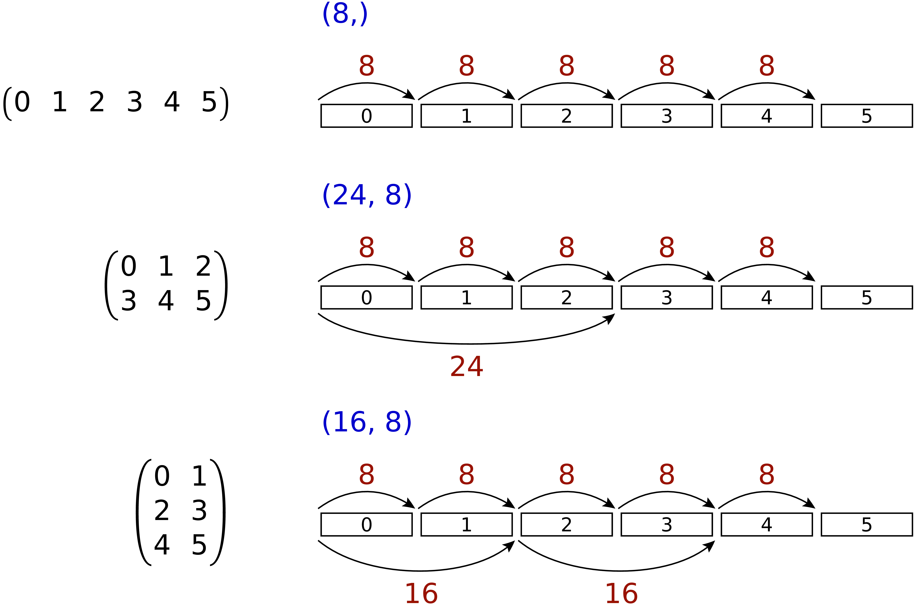
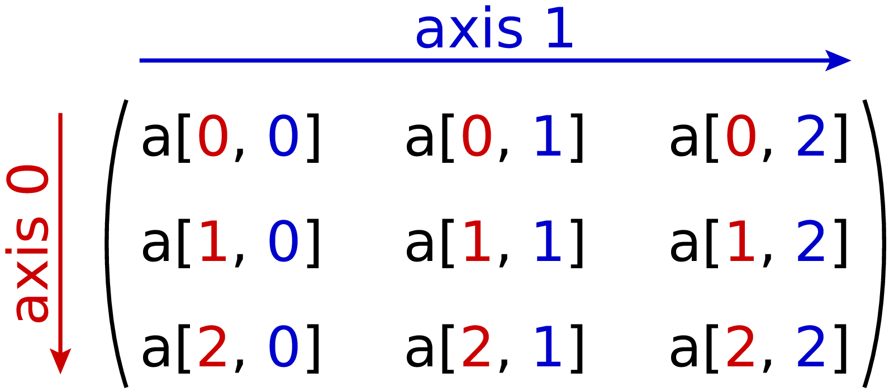
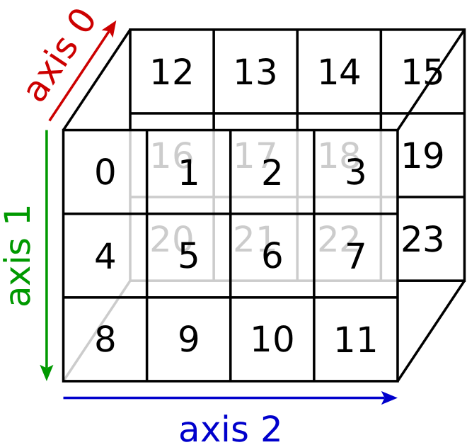
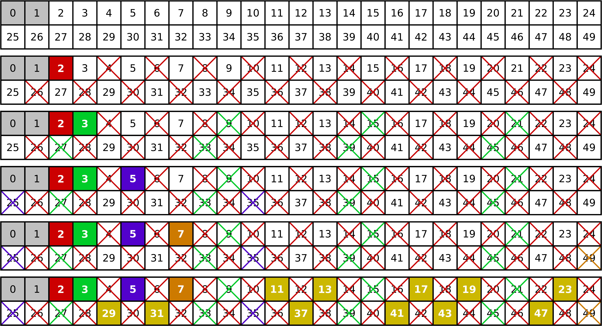
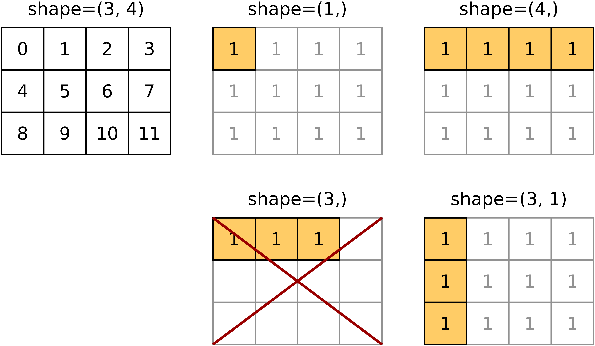
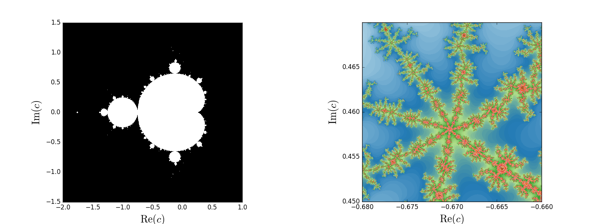
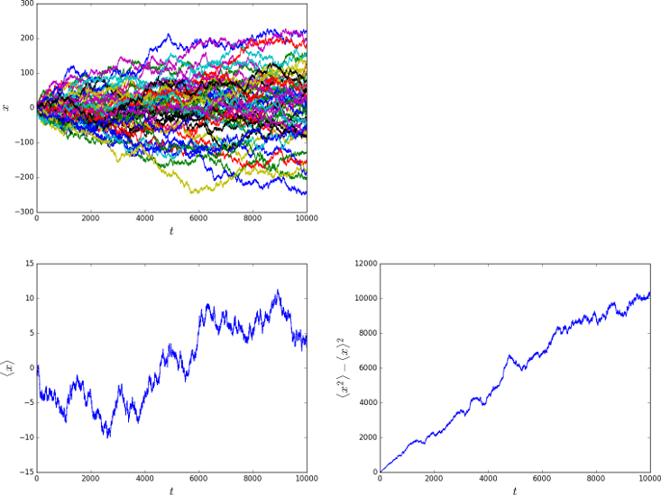

NumPy¶
In der Vorlesung »Einführung in das Programmieren für Physiker und Naturwissenschaftler« wurde am Beispiel von NumPy und SciPy eine kurze Einführung in die Benutzung numerischer Programmbibliotheken gegeben. Dabei wurde an einigen wenigen Beispielen gezeigt, wie man in Python mit Vektoren und Matrizen arbeiten und einfache Problemstellungen der linearen Algebra lösen kann. Im Folgenden wollen wir uns etwas genauer mit NumPy beschäftigen, das die Basis für wichtige wissenschaftliche Programmbibliotheken bildet, wie das bereits genannte SciPy, Matplotlib für die Erstellung von Grafiken, Pandas für die Analyse großer Datenmengen, Scikit-image für die Bildbearbeitung, Scikit-learn für maschinenbasiertes Lernen und einige andere mehr.
Wegen des großen Umfangs der von NumPy zur Verfügung gestellten Funktionalität werden wir uns auf wesentliche Aspekte beschränken und keine vollständige Beschreibung anstreben. Bei Bedarf sollte daher die NumPy Referenzdokumentation herangezogen werden. Als Informationsquelle sind zudem die Python Scientific Lecture Notes empfehlenswert. Dort werden auch weitere Programmbibliotheken diskutiert, die in naturwissenschaftlichen Anwendungen hilfreich sein können.
Python-Listen und Matrizen¶
Viele naturwissenschaftliche Problemstellungen lassen sich in natürlicher Weise mit Hilfe von Vektoren und Matrizen formulieren. Dies kann entweder eine Eigenschaft des ursprünglichen Problems sein, beispielsweise bei der Beschreibung eines gekoppelten schwingenden Systems mit Hilfe von gekoppelten Differentialgleichungen. Es kann aber auch vorkommen, dass erst die numerische Umsetzung zu einer Formulierung in Vektoren und Matrizen führt, zum Beispiel bei der Diskretisierung einer partiellen Differentialgleichung.
Will man solche Problemstellungen mit den Standardmitteln bearbeiten, die von Python zur Verfügung gestellt werden, so wird man auf Listen zurückgreifen müssen. Um eine zweidimensionale Matrix zu definieren, würde man eine Liste von Listen anlegen und könnte dann durch eine doppelte Indizierung auf ein einzelnes Element zugreifen.
In [1]: matrix = [[1.1, 2.2, 3.3], [4.4, 5.5, 6.6], [7.7, 8.8, 9.9]]
In [2]: matrix[0]
Out[2]: [1.1, 2.2, 3.3]
In [3]: matrix[0][2]
Out[3]: 3.3
Das Beispiel erklärt die doppelte Indizierung. Durch den ersten Index, hier [0], wird die erste Unterliste ausgewählt, aus der wiederum ein einzelnes Element, hier das dritte, ausgewählt werden kann.
Eine Zeile kann man entweder wie oben in der Eingabe 2 erhalten oder auch etwas umständlicher mit
In [4]: matrix[0][:]
Out[4]: [1.1, 2.2, 3.3]
Hier ist explizit angegeben, dass wir alle Elemente der ersten Zeile haben wollen. Ein enstprechender Zugriff auf eine Spalte funktioniert jedoch nicht:
In [5]: matrix[:][0]
Out[5]: [1.1, 2.2, 3.3]
Hier gibt matrix[:] eine Liste mit allen Unterlisten, also einfach die ursprüngliche Liste zurück. Somit ist matrix[:][0] nichts anderes als die erste Unterliste. Wir erhalten also wiederum die erste Zeile und keineswegs die erste Spalte. Auch wenn es beispielsweise mit Hilfe einer list comprehension möglich ist, eine Spalte aus einer Matrix zu extrahieren, zeigt das Beispiel, dass Zeilen und Spalten in einer durch eine Liste dargestellten Matrix nicht in gleicher Weise behandelt werden können. Für eine Matrix würde man eine Gleichbehandlung jedoch auf jeden Fall erwarten.
Ein weiterer Nachteil besteht in der Flexibilität von Listen, die ja bekanntlich beliebige Objekte enthalten können. Python muss daher einen erheblichen Aufwand bei der Verwaltung von Listen treiben. Dies betrifft alleine schon die Adressierung eines einzelnen Elements. Andererseits wird diese Flexibilität bei Matrizen überhaupt nicht benötigt, da dort alle Einträge vom gleichen Datentyp sind. Es sollte also möglich sein, erheblich effizientere Programme zu schreiben, indem man Matrizen nicht durch Listen darstellt, sondern durch einen auf diese Aufgabe zugeschnittenen Datentypen. Hierzu greift man auf das von NumPy zur Verfügung gestellte ndarray-Objekt, also ein N-dimensionales Array, zurück.
NumPy-Arrays¶
Bevor wir mit NumPy-Arrays [1] arbeiten können, müssen wir NumPy importieren. Da der Namensraum von NumPy sehr groß ist, empfiehlt es sich, diesen nicht mit from numpy import * zu importieren. Auch der Import einzelner Objekte empfiehlt sich nicht. Importiert man beispielsweise die Sinusfunktion aus NumPy, so ist weiter unten in einem Pythonskript nicht mehr ohne Weiteres erkennbar, ob es sich um den Sinus aus NumPy oder aus dem math-Modul handelt. Üblicherweise importiert man daher NumPy in folgender Weise:
In [1]: import numpy as np
Die Abkürzung np erspart dabei etwas Schreibarbeit, macht aber zugleich die Herkunft eines Objekts deutlich. Hält man sich an diese Konvention, so trägt man zur Verständlichkeit des Codes bei.
Um die Eigenschaften von Arrays zu untersuchen, müssen wir zunächst wissen, wie sich ein Array erzeugen lässt. In NumPy ist es sehr einfach, die Dokumentation nach einem bestimmten Text zu durchsuchen. Die zahlreichen Möglichkeiten, ein Array zu erzeugen, lassen sich folgendermaßen erhalten:
In [2]: np.lookfor('create array')
Search results for 'create array'
---------------------------------
numpy.array
Create an array.
numpy.memmap
Create a memory-map to an array stored in a *binary* file on disk.
numpy.diagflat
Create a two-dimensional array with the flattened input as a diagonal.
numpy.fromiter
Create a new 1-dimensional array from an iterable object.
...
Dabei wurde hier nur ein Teil der Ausgabe dargestellt. Gleich der erste Eintrag verrät uns, wie man aus einer Liste von Listen ein Array erzeugen kann. Details hierzu erhält man bei Bedarf wie üblich mit help(np.array) oder alternativ mit np.info(np.array).
In [3]: matrix = [[0, 1, 2],
...: [3, 4, 5],
...: [6, 7, 8]]
In [4]: myarray = np.array(matrix)
In [5]: myarray
Out[5]:
array([[0, 1, 2],
[3, 4, 5],
[6, 7, 8]])
In [6]: type(myarray)
Out[6]: numpy.ndarray
Ein Array besitzt als wesentliche Bestandteile die Daten im eigentlichen Sinne, also die Werte der einzelnen Matrixelemente, sowie Information darüber, wie auf ein spezifisches Matrixelement zugegriffen werden kann. Die Daten sind im Speicher einfach hintereinander, also in eindimensionaler Form, abgelegt. Dabei gibt es die Möglichkeit, die Matrix zeilenweise oder spaltenweise abzuspeichern. Ersteres wird von der Programmiersprache C verwendet, während die zweite Variante von Fortran verwendet wird.
Nachdem die Daten strukturlos im Speicher abgelegt sind, müssen ndarray-Objekte, wie schon erwähnt, neben den Daten auch Informationen darüber besitzen, wie auf einzelne Matrixelemente zugegriffen wird. Auf diese Weise lässt sich sehr leicht die Adresse der Daten eines Matrixelements bestimmen. Zudem ist es möglich, die gleichen Daten im Speicher auf verschiedene Weise anzusehen. Damit ist es häufig möglich, unnötige Kopiervorgänge im Speicher zu vermeiden. Andererseits ist es aus diesem Grunde wichtig zu wissen, ob NumPy im Einzelfall nur eine andere Sicht auf die Daten zur Verfügung stellt oder tatsächlich ein neues Array erzeugt.
Um die Informationen über die Struktur eines Arrays besser zu verstehen, definieren wir uns eine Funktion, die einige Attribute des Arrays ausgibt.
In [7]: def array_attributes(a):
...: for attr in ('ndim', 'size', 'itemsize', 'dtype', 'shape', 'strides'):
...: print('{:8s}: {}'.format(attr, getattr(a, attr)))
Zum Experimentieren mit Arrays ist die arange-Methode sehr praktisch, die ähnlich wie das uns bereits bekannte range eine Reihe von Zahlen erzeugt, nun jedoch in einem Array.
In [8]: matrix = np.arange(16)
In [9]: matrix
Out[9]: array([ 0, 1, 2, 3, 4, 5, 6, 7, 8, 9, 10, 11, 12, 13, 14, 15])
In [10]: array_attributes(matrix)
ndim : 1
size : 16
itemsize: 8
dtype : int64
shape : (16,)
strides : (8,)
Das Attribut ndim gibt an, dass wir es mit einem eindimensionalen Array zu tun haben, während das Attribut size anzeigt, dass das Array insgesamt 16 Elemente besitzt. Jedes Element besitzt den Datentyp (dtype) int64. Es handelt sich also um 64-Bit-Integers, die eine Größe von 8 Byte (itemsize) besitzen. Die Attribute können wir auch direkt in der üblichen objektorientierten Schreibweise ansprechen. Zum Beispiel gibt
In [11]: matrix.nbytes
Out[11]: 128
den Speicherplatzbedarf des Arrays in Bytes an.
Für Arrays kommen eine ganze Reihe verschiedener Datentypen in Frage, zum Beispiel Integers verschiedener Länge (int8, int16, int32, int64) oder auch ohne Vorzeichen (uint8, ...), Gleitkommazahlen (float16, float32, float64), komplexe Zahlen (complex64, complex128), Wahrheitswerte (bool8) und sogar Unicode-Strings als nichtnumerischer Datentyp. Wenn der Datentyp nicht angegeben oder durch die Konstruktion des Arrays bestimmt ist, werden die im jeweiligen System standardmäßig verwendeten Gleitkommazahlen herangezogen, also meistens float64. Bei Integers ist zu beachten, dass es im Gegensatz zu Python-Integers wegen der endlichen Länge zu einem Überlauf kommen kann, wie das folgende Beispiel demonstriert.
In [12]: np.arange(1, 160, 10, dtype=np.int8)
Out[12]:
array([ 1, 11, 21, 31, 41, 51, 61, 71, 81, 91, 101,
111, 121, -125, -115, -105], dtype=int8)
Wie kann man diese Ausgabe verstehen?
{kind=link}
Besonders interessant sind die beiden Attribute shape und strides. Der Wert des Attributs shape, in unserem Beispiel das Tupel (16,), gibt die Zahl der Elemente in der jeweiligen Dimension an. Um dies besser zu verstehen, ändern wir dieses Attribut ab, wobei darauf zu achten ist, dass die Zahl der Elemente des Arrays erhalten bleibt. Wir wandeln das eindimensionale Array mit 16 Elementen in ein 4×4-Array um.
In [13]: matrix.shape = (4, 4)
In [14]: matrix
Out[14]:
array([[ 0, 1, 2, 3],
[ 4, 5, 6, 7],
[ 8, 9, 10, 11],
[12, 13, 14, 15]])
In [15]: matrix.strides
Out[15]: (32, 8)
Dabei wird deutlich, dass nicht nur die Form (shape) modifiziert wurde, sondern auch aus dem Tupel (8,) des Attributs strides [2] das Tupel (32, 8) wurde. Die strides geben an, um wieviel Bytes man weitergehen muss, um zum nächsten Element in dieser Dimension zu gelangen. Die folgende Abbildung zeigt dies an einem kleinen Array.
{kind=link}
Greifen wir speziell den mittleren Fall mit den strides (24, 8) heraus. Bewegt man sich in einer Zeile der Matrix von Element zu Element, so muss man im Speicher jeweils um 8 Bytes weitergehen, wenn ein Datentyp int64 vorliegt. Entlang einer Spalte beträgt die Schrittweite dagegen 24 Bytes.
Wie verändern sich die strides in dem 16-elementigen Array np.arange(16), wenn man einen shape von (2, 2, 2, 2) wählt?
Für die Anwendung ist es wichtig zu wissen, dass die Manipulation der Attribute shape und strides nicht die Daten im Speicher verändert. Es wird also nur eine neue Sicht auf die vorhandenen Daten vermittelt. Dies ist insofern von Bedeutung als das Kopieren von größeren Datenmengen durchaus mit einem nicht unerheblichen Zeitaufwand verbunden sein kann.
Um uns davon zu überzeugen, dass tatsächlich kein neues Array erzeugt wird, generieren wir nochmals ein eindimensionales Array und daraus mit Hilfe von reshape ein zweidimensionales Array.
In [16]: m1 = np.arange(16)
In [17]: m1
Out[17]: array([ 0, 1, 2, 3, 4, 5, 6, 7, 8, 9, 10, 11, 12, 13, 14, 15])
In [18]: m2 = m1.reshape(4, 4)
In [19]: m2
Out[19]:
array([[ 0, 1, 2, 3],
[ 4, 5, 6, 7],
[ 8, 9, 10, 11],
[12, 13, 14, 15]])
Nun ändern wir das erste Element in dem eindimensionalen Array ab und stellen in der Tat fest, dass sich diese Änderung auch auf das zweidimensionale Array auswirkt.
In [20]: m1[0] = 99
In [21]: m1
Out[21]: array([99, 1, 2, 3, 4, 5, 6, 7, 8, 9, 10, 11, 12, 13, 14, 15])
In [22]: m2
Out[22]:
array([[99, 1, 2, 3],
[ 4, 5, 6, 7],
[ 8, 9, 10, 11],
[12, 13, 14, 15]])
Eine Matrix lässt sich auch transponieren, ohne dass Matrixelemente im Speicher hin und her kopiert werden müssen. Stattdessen werden nur die beiden Werte der strides vertauscht.
In [23]: m2.strides
Out[23]: (32, 8)
In [24]: m2.T
Out[24]:
array([[99, 4, 8, 12],
[ 1, 5, 9, 13],
[ 2, 6, 10, 14],
[ 3, 7, 11, 15]])
In [25]: m2.T.strides
Out[25]: (8, 32)
Obwohl die Daten im Speicher nicht verändert wurden, kann man jetzt mit der transponierten Matrix arbeiten.
Mit Hilfe der Attribute shape und strides lässt sich die Sicht auf ein Array auf sehr flexible Weise festlegen. Allerdings ist der Benutzer selbst für die Folgen verantwortlich, wie der zweite Teil des folgenden Beispiels zeigt. Dazu gehen wir zu unserem ursprünglichen 4×4-Array zurück und verändern das Attribut strides mit Hilfe der as_strided-Methode.
In [26]: matrix = np.arange(16).reshape(4, 4)
In [27]: matrix1 = np.lib.stride_tricks.as_strided(matrix, strides=(16, 16))
In [28]: matrix1
Out[28]:
array([[ 0, 2, 4, 6],
[ 2, 4, 6, 8],
[ 4, 6, 8, 10],
[ 6, 8, 10, 12]])
In [29]: matrix2 = np.lib.stride_tricks.as_strided(matrix, shape=(4, 4), strides=(16, 4))
In [30]: matrix2
Out[30]:
array([[ 0, 4294967296, 1, 8589934592],
[ 2, 12884901888, 3, 17179869184],
[ 4, 21474836480, 5, 25769803776],
[ 6, 30064771072, 7, 34359738368]])
Im ersten Fall ist der Wert der strides gerade das Doppelte der Datenbreite, so dass in einer Zeile von einem Wert zum nächsten jeweils ein Wert im Array übersprungen wird. Beim Übergang von einer Zeile zur nächsten wird gegenüber dem Beginn der vorherigen Zeile auch nur um zwei Werte vorangeschritten, so dass sich das gezeigte Resultat ergibt.
Im zweiten Beispiel wurde ein stride gewählt, der nur die Hälfte einer Datenbreite beträgt. Der berechnete Beginn eines neuen Werts im Speicher liegt damit nicht an einer Stelle, die einem tatsächlichen Beginn eines Werts entspricht. Python interpretiert dennoch die erhaltene Information und erzeugt so das obige Array. In unserem Beispiel erreicht man bei jedem zweiten Wert wieder eine korrekte Datengrenze. Die Manipulation von strides erfordert also eine gewisse Sorgfalt, und man ist für eventuelle Fehler selbst verantwortlich.
Erzeugung von NumPy-Arrays¶
NumPy-Arrays lassen sich je nach Bedarf auf verschiedene Arten erzeugen. Die Basis bildet die ndarray-Methode, auf die man immer zurückgreifen kann. In den meisten Fällen wird es aber praktischer sein, eine der spezialisierteren Methoden zu verwenden, die wir im Folgenden besprechen wollen.
Um ein mit Nullen aufgefülltes 2×2-Array zu erzeugen, geht man folgendermaßen vor:
In [1]: matrix1 = np.zeros((2, 2))
In [2]: matrix1, matrix1.dtype
Out[2]:
(array([[ 0., 0.],
[ 0., 0.]]), dtype('float64'))
Das Tupel im Argument gibt dabei die Form des Arrays vor. Wird der Datentyp der Einträge nicht weiter spezifiziert, so werden Gleitkommazahlen mit einer Länge von 8 Bytes verwendet. Man kann aber auch explizit zum Beispiel Integereinträge verlangen:
In [3]: np.zeros((2, 2), dtype=np.int)
Out[3]:
array([[0, 0],
[0, 0]])
Neben der zeros-Funktion gibt es auch noch die empty-Funktion, die zwar den benötigten Speicherplatz zur Verfügung stellt, diesen jedoch nicht initialisiert. Im Allgemeinen werden also die Arrayelemente von den hier im Beispiel gezeigten abweichen.
In [4]: np.empty((3, 3))
Out[4]:
array([[ 6.91153891e-310, 2.32617410e-316, 6.91153265e-310],
[ 6.91153265e-310, 6.91153265e-310, 6.91153265e-310],
[ 6.91153265e-310, 6.91153265e-310, 3.95252517e-322]])
Die empty-Funktion sollte also nur verwendet werden, wenn die Arrayelemente später noch belegt werden.
Will man alle Elemente eines Arrays mit einem konstanten Wert ungleich Null füllen, so kann man ones verwenden und das sich ergebende Array mit einem Faktor multiplizieren.
In [5]: 2*np.ones((2, 3))
Out[5]:
array([[ 2., 2., 2.],
[ 2., 2., 2.]])
Häufig benötigt man eine Einheitsmatrix, die man mit Hilfe von identity erhält:
In [6]: np.identity(3)
Out[6]:
array([[ 1., 0., 0.],
[ 0., 1., 0.],
[ 0., 0., 1.]])
Hierbei wird immer eine Diagonalmatrix erzeugt. Will man dies nicht, so kann man eye verwenden, das nicht nur nicht quadratische Arrays erzeugen kann, sondern auch die Diagonale nach oben oder unten verschieben lässt.
In [7]: np.eye(2, 4)
Out[7]:
array([[ 1., 0., 0., 0.],
[ 0., 1., 0., 0.]])
Zu beachten ist hier, dass die Form des Arrays nicht als Tupel vorgegeben wird, da ohnehin nur zweidimensionale Arrays erzeugt werden können. Lässt man das zweite Argument weg, so wird ein quadratisches Array erzeugt. Will man die Diagonaleinträge verschieben, so gibt man dies mit Hilfe des Parameters k an:
In [8]: np.eye(4, k=1)-np.eye(4, k=-1)
Out[8]:
array([[ 0., 1., 0., 0.],
[-1., 0., 1., 0.],
[ 0., -1., 0., 1.],
[ 0., 0., -1., 0.]])
Eine Diagonalmatrix mit unterschiedlichen Einträgen lässt sich aus einem eindimensionalen Array folgendermaßen erzeugen:
In [9]: np.diag([1, 2, 3, 4])
Out[9]:
array([[1, 0, 0, 0],
[0, 2, 0, 0],
[0, 0, 3, 0],
[0, 0, 0, 4]])
Dabei lässt sich wie bei der eye-Funktion die Diagonale verschieben.
In [10]: np.diag([1, 2, 3, 4], k=1)
Out[10]:
array([[0, 1, 0, 0, 0],
[0, 0, 2, 0, 0],
[0, 0, 0, 3, 0],
[0, 0, 0, 0, 4],
[0, 0, 0, 0, 0]])
Umgekehrt kann man mit der diag-Funktion auch die Diagonalelemente eines zweidimensionalen Arrays extrahieren.
In [11]: matrix = np.arange(16).reshape(4, 4)
In [12]: matrix
Out[12]:
array([[ 0, 1, 2, 3],
[ 4, 5, 6, 7],
[ 8, 9, 10, 11],
[12, 13, 14, 15]])
In [13]: np.diag(matrix)
Out[13]: array([ 0, 5, 10, 15])
Lassen sich die Arrayeinträge als Funktion der Indizes ausdrücken, so kann man die fromfunction-Funktion verwenden, wie in dem folgenden Beispiel zu sehen ist, das eine Multiplikationstabelle erzeugt.
In [14]: np.fromfunction(lambda i, j: (i+1)*(j+1), (6, 6), dtype=np.int)
Out[14]:
array([[ 1, 2, 3, 4, 5, 6],
[ 2, 4, 6, 8, 10, 12],
[ 3, 6, 9, 12, 15, 18],
[ 4, 8, 12, 16, 20, 24],
[ 5, 10, 15, 20, 25, 30],
[ 6, 12, 18, 24, 30, 36]])
Diese Funktion ist nicht auf zweidimensionale Arrays beschränkt.
Bei der Konstruktion von Arrays sind auch Funktionen interessant, die als Verallgemeinerung der in Python eingebauten Funktion range angesehen werden können. Ihr Nutzen ergibt sich vor allem aus der Tatsache, dass man gewissen Funktionen, den universellen Funktionen oder ufuncs in NumPy, die wir im Abschnitt Universelle Funktionen besprechen werden, ganze Arrays als Argumente übergeben kann. Damit wird eine besonders effiziente Auswertung dieser Funktionen möglich.
Eindimensionale Arrays lassen sich mit Hilfe von arange, linspace und logspace erzeugen:
In [15]: np.arange(1, 2, 0.1)
Out[15]: array([ 1. , 1.1, 1.2, 1.3, 1.4, 1.5, 1.6, 1.7, 1.8, 1.9])
Ähnlich wie bei range erzeugt arange aus der Angabe eines Start- und eines Endwerts sowie einer Schrittweite eine Folge von Werten. Allerdings können diese auch Gleitkommazahlen sein. Zudem wird statt einer Liste ein Array erzeugt. Wie bei range ist der Endwert hierin nicht enthalten. Allerdings können Rundungsfehler zu unerwarteten Effekten führen.
In [16]: np.arange(1, 1.5, 0.1)
Out[16]: array([ 1. , 1.1, 1.2, 1.3, 1.4])
In [17]: np.arange(1, 1.6, 0.1)
Out[17]: array([ 1. , 1.1, 1.2, 1.3, 1.4, 1.5, 1.6])
In [18]: np.arange(1, 1.601, 0.1)
Out[18]: array([ 1. , 1.1, 1.2, 1.3, 1.4, 1.5, 1.6])
Dieses Problem kann man umgehen, wenn man statt der Schrittweite eine Anzahl von Punkten in dem gegebenen Intervall vorgibt. Dafür ist linspace eine geeignete Funktion, sofern die Schrittweite konstant sein soll. Bei Bedarf kann man sich neben dem Array auch noch die Schrittweite ausgeben lassen. Benötigt man eine logarithmische Skala, so verwendet man logspace, das den Exponenten linear zwischen einem Start- und einem Endwert verändert. Die Basis ist standardmäßig 10, sie kann aber durch Setzen des Parameters base an spezielle Erfordernisse angepasst werden.
In [19]: np.linspace(1, 2, 11)
Out[19]: array([ 1. , 1.1, 1.2, 1.3, 1.4, 1.5, 1.6, 1.7, 1.8, 1.9, 2. ])
In [20]: np.linspace(1, 2, 4, retstep=True)
Out[20]:
(array([ 1. , 1.33333333, 1.66666667, 2. ]),
0.3333333333333333)
In [21]: np.logspace(0, 3, 6)
Out[21]:
array([ 1. , 3.98107171, 15.84893192, 63.09573445,
251.18864315, 1000. ])
In [22]: np.logspace(0, 3, 4, base=2)
Out[22]: array([ 1., 2., 4., 8.])
Gerade bei der graphischen Darstellung von Funktionen sind linspace und logspace besonders nützlich. Im folgenden Beispiel verwenden wir die matplotlib-Bibliothek, die im Abschnitt Erstellung von Grafiken mit matplotlib besprochen wird.
In [23]: import matplotlib.pyplot as plt
In [24]: x = np.linspace(0, 2*np.pi)
In [25]: y = np.sin(x)
In [26]: plt.plot(x, y)
Out[26]: [<matplotlib.lines.Line2D at 0x7f3ad50b76a0>]
{kind=link}
Möchte man eine Funktion auf einem Gitter auswerten und benötigt man dazu separate Arrays für die x- und y-Werte, so hilft meshgrid weiter.
In [27]: xvals, yvals = np.meshgrid([-1, 0, 1], [2, 3, 4])
In [28]: xvals
Out[28]:
array([[-1, 0, 1],
[-1, 0, 1],
[-1, 0, 1]])
In [29]: yvals
Out[29]:
array([[2, 2, 2],
[3, 3, 3],
[4, 4, 4]])
In diesem Zusammenhang sind auch die Funktionen mgrid und ogrid von Interesse, die wir im Abschnitt Universelle Funktionen besprechen werden, nachdem wir die Adressierung von Arrays genauer angesehen haben.
Zur graphischen Darstellung von Daten ist es häufig erforderlich, die Daten zunächst aus einer Datei einzulesen und in einem Array zu speichern. Neben wir an, wir hätten eine Datei x_von_t.dat mit folgendem Inhalt:
# Zeit Ort
0.0 0.0
0.1 0.1
0.2 0.4
0.3 0.9
Hierbei zeigt das #-Zeichen in der ersten Zeile an, dass es sich um eine Kommentarzeile handelt, die nicht in das Array übernommen werden soll. Unter Verwendung von loadtxt kann man die Daten nun einlesen:
In [30]: np.loadtxt("x_von_t.dat")
Out[30]:
array([[ 0. , 0. ],
[ 0.1, 0.1],
[ 0.2, 0.4],
[ 0.3, 0.9]])
Bei der loadtxt-Funktion lassen sich zum Beispiel das Kommentarzeichen oder die Trennzeichen zwischen Einträgen konfigurieren. Noch wesentlich flexibler ist genfromtxt, das es unter anderem erlaubt, Spaltenüberschriften aus der Datei zu entnehmen oder mit fehlenden Einträgen umzugehen. Für Details wird auf die zugehörige Dokumentation verwiesen.
Abschließend betrachten wir noch kurz die Erzeugung von Zufallszahlen, die man zum Beispiel für Simulationszwecke benötigt. Statt viele einzelne Zufallszahlen zu erzeugen ist es häufig effizienter, gleich ein ganzes Array mit Zufallszahlen zu füllen. Im folgenden Beispiel erzeugen wir ein Array mit zehn im Intervall zwischen 0 und 1 gleich verteilten Pseudozufallszahlen. Reproduzierbar werden die Zahlenwerte, wenn zunächst ein Startwert für die Berechnung, ein seed, gesetzt wird.
In [31]: np.random.rand(2, 5)
Out[31]:
array([[ 0.99281469, 0.90376223, 0.81096671, 0.33726814, 0.34463236],
[ 0.74234766, 0.05862623, 0.49005243, 0.73496906, 0.21421244]])
In [32]: np.random.rand(2, 5)
Out[32]:
array([[ 0.51071925, 0.11952145, 0.12714712, 0.98081263, 0.05736099],
[ 0.35101524, 0.86407263, 0.80264858, 0.36629556, 0.59562485]])
In [33]: np.random.seed(1234)
In [34]: np.random.rand(2, 5)
Out[34]:
array([[ 0.19151945, 0.62210877, 0.43772774, 0.78535858, 0.77997581],
[ 0.27259261, 0.27646426, 0.80187218, 0.95813935, 0.87593263]])
In [35]: np.random.rand(2, 5)
Out[35]:
array([[ 0.19151945, 0.62210877, 0.43772774, 0.78535858, 0.77997581],
[ 0.27259261, 0.27646426, 0.80187218, 0.95813935, 0.87593263]])
Die Zufälligkeit der Daten lässt sich graphisch darstellen.
In [36]: data = np.random.rand(20, 20)
In [37]: plt.imshow(data, cmap=plt.cm.hot, interpolation='none')
Out[37]: <matplotlib.image.AxesImage at 0x7f4eacf147b8>
In [38]: plt.colorbar()
Out[38]: <matplotlib.colorbar.Colorbar at 0x7f4eac6a60f0>
{kind=link}
Als Anwendung betrachten wir drei Realisierungen von hundert Würfen eines Würfels. Dazu erzeugen wir mit randint(1, 7) ganzzahlige Pseudozufallszahlen zwischen 1 und 6 in einem zweidimensionalen Array der Form (100, 3). Diese drei Spalten zu je 100 Zahlen werden jeweils als Histogramm dargestellt.
In [14]: wuerfe = np.random.randint(1, 7, (100, 3))
In [15]: plt.hist(wuerfe, np.linspace(0.5, 6.5, 7))
Out[15]:
([array([ 14., 22., 16., 12., 16., 20.]),
array([ 20., 18., 17., 14., 14., 17.]),
array([ 12., 13., 24., 16., 18., 17.])],
array([ 0.5, 1.5, 2.5, 3.5, 4.5, 5.5, 6.5]),
<a list of 3 Lists of Patches objects>)
{kind=link}
Adressierung von NumPy-Arrays¶
Die Adressierungsmöglichkeiten für NumPy-Arrays basieren auf der so genannten slice-Syntax, die wir von Python-Listen her kennen und uns hier noch einmal kurz in Erinnerung rufen wollen. Einen Ausschnitt aus einer Liste, ein slice, erhält man durch die Notation [start:stop:step]. Hierbei werden ausgehend von dem Element mit dem Index start die Elemente bis vor das Element mit dem Index stop mit einer Schrittweite step ausgewählt. Wird die Schrittweite nicht angegeben, so nimmt step den Defaultwert 1 an. Negative Schrittweiten führen in der Liste von hinten nach vorne. Fehlen start und/oder stop so beginnen die ausgewählten Elemente mit dem ersten Element bzw. enden mit dem letzten Element. Negative Indexwerte werden vom Ende der Liste her genommen. Das letzte Element kann also mit dem Index -1, das vorletzten Element mit dem Index -2 usw. angesprochen werden. Diese Indizierung funktioniert so auch für NumPy-Arrays wie die folgenden Beispiele zeigen.
In [1]: a = np.arange(10)
In [2]: a
Out[2]: array([0, 1, 2, 3, 4, 5, 6, 7, 8, 9])
In [3]: a[:]
Out[3]: array([0, 1, 2, 3, 4, 5, 6, 7, 8, 9])
In [4]: a[::2]
Out[4]: array([0, 2, 4, 6, 8])
In [5]: a[1:4]
Out[5]: array([1, 2, 3])
In [6]: a[6:-2]
Out[6]: array([6, 7])
In [7]: a[::-1]
Out[7]: array([9, 8, 7, 6, 5, 4, 3, 2, 1, 0])
Für mehrdimensionale Arrays wird die Notation direkt verallgemeinert. Im Gegensatz zu der im Abschnitt Python-Listen und Matrizen beschriebenen Notation für Listen von Listen werden hier die diversen Indexangaben durch Kommas getrennt zusammengefasst. Einige Beispiele für zweidimensionale Arrays sollen das illustrieren.
In [8]: a = np.arange(36).reshape(6, 6)
In [9]: a
Out[9]:
array([[ 0, 1, 2, 3, 4, 5],
[ 6, 7, 8, 9, 10, 11],
[12, 13, 14, 15, 16, 17],
[18, 19, 20, 21, 22, 23],
[24, 25, 26, 27, 28, 29],
[30, 31, 32, 33, 34, 35]])
In [10]: a[:, :]
Out[10]:
array([[ 0, 1, 2, 3, 4, 5],
[ 6, 7, 8, 9, 10, 11],
[12, 13, 14, 15, 16, 17],
[18, 19, 20, 21, 22, 23],
[24, 25, 26, 27, 28, 29],
[30, 31, 32, 33, 34, 35]])
In [11]: a[2:4, 2:4]
Out[11]:
array([[14, 15],
[20, 21]])
In [12]: a[2:4, 3:5]
Out[12]:
array([[15, 16],
[21, 22]])
In [13]: a[::2, ::2]
Out[13]:
array([[ 0, 2, 4],
[12, 14, 16],
[24, 26, 28]])
In [14]: a[2::2, ::2]
Out[14]:
array([[12, 14, 16],
[24, 26, 28]])
In [15]: a[2:4]
Out[15]:
array([[12, 13, 14, 15, 16, 17],
[18, 19, 20, 21, 22, 23]])
Wie das letzte Beispiel zeigt, ergänzt NumPy bei fehlenden Indexangaben jeweils einen Doppelpunkt, so dass alle Elemente ausgewählt werden, die mit den explizit gemachten Indexangaben konsistent sind.
Will man eine Spalte (oder auch eine Zeile) in einer zweidimensionalen Array auswählen, so hat man zwei verschiedene Möglichkeiten:
In [16]: a[:, 0:1]
Out[16]:
array([[ 0],
[ 6],
[12],
[18],
[24],
[30]])
In [17]: a[:, 0]
Out[17]: array([ 0, 6, 12, 18, 24, 30])
Im ersten Fall sorgt die für beide Dimensionen vorhandene Indexnotation dafür, dass ein zweidimensionales Array erzeugt wird, das die Elemente der ersten Spalte enthält. Im zweiten Fall wird für die zweite Dimension ein fester Index angegeben, so dass nun ein eindimensionales Array erzeugt wird, die wiederum aus den Elementen der ersten Spalte besteht.
In einigen NumPy-Methoden gibt es einen Parameter axis, der die Richtung in dem Array angibt, in der die Methode ausgeführt werden soll. Die Achsennummer ergibt sich aus der Position der zugehörigen Indexangabe. Wie man aus den obigen Beispielen entnehmen kann, verläuft die Achse 0 von oben nach unten, während die Achse 1 von links nach rechts verläuft. Dies wird auch durch die folgende Abbildung veranschaulicht.
{kind=link}
Das Aufsummieren von Elementen unserer Beispielmatrix erfolgt dann mit Hilfe der sum-Methode entweder von oben nach unten, von links nach rechts oder über alle Elemente.
In [18]: a.sum(axis=0)
Out[18]: array([ 90, 96, 102, 108, 114, 120])
In [19]: a.sum(axis=1)
Out[19]: array([ 15, 51, 87, 123, 159, 195])
In [20]: a.sum()
Out[20]: 630
Zur Verdeutlichung betrachten wir noch ein dreidimensionales Array das im Folgenden graphisch dargestellt ist.
{kind=link}
In [21]: b = np.arange(24).reshape(2, 3, 4)
In [22]: b
Out[22]:
array([[[ 0, 1, 2, 3],
[ 4, 5, 6, 7],
[ 8, 9, 10, 11]],
[[12, 13, 14, 15],
[16, 17, 18, 19],
[20, 21, 22, 23]]])
In [23]: b[0:1]
Out[23]:
array([[[ 0, 1, 2, 3],
[ 4, 5, 6, 7],
[ 8, 9, 10, 11]]])
In [24]: b[:, 0:1]
Out[24]:
array([[[ 0, 1, 2, 3]],
[[12, 13, 14, 15]]])
In [25]: b[:, :, 0:1]
Out[25]:
array([[[ 0],
[ 4],
[ 8]],
[[12],
[16],
[20]]])
In [26]: b[..., 0:1]
Out[26]:
array([[[ 0],
[ 4],
[ 8]],
[[12],
[16],
[20]]])
Man sieht hier deutlich, wie je nach Wahl der Achse ein entsprechender Schnitt durch das als Würfel vorstellbare Array gemacht wird. Das letzte Beispiel zeigt die Benutzung des Auslassungszeichens ... (im Englischen ellipsis genannt). Es steht für die Anzahl von Doppelpunkten, die nötig sind, um die Indizes für alle Dimensionen zu spezifizieren. Allerdings funktioniert dies nur beim ersten Auftreten des Auslassungszeichens, da sonst nicht klar ist, wie viele Indexspezifikation für jedes Auslassungszeichen einzusetzen sind. Alle weiteren Auslassungszeichen werden daher durch einen einzelnen Doppelpunkt ersetzt.
Weiter oben hatten wir in einem Beispiel gesehen, dass die Angabe eines festen Index die Dimension des Arrays effektiv um Eins vermindert. Umgekehrt ist es auch möglich, eine zusätzliche Dimension der Länge Eins hinzuzufügen. Hierzu dient newaxis, das an der gewünschten Stelle als Index eingesetzt werden kann. Die folgenden Beispiele zeigen, wie aus einem eindimensionalen Array so zwei verschiedene zweidimensionale Arrays konstruiert werden können.
In [27]: c = np.arange(5)
In [28]: c
Out[28]: array([0, 1, 2, 3, 4])
In [29]: c[:, np.newaxis]
Out[29]:
array([[0],
[1],
[2],
[3],
[4]])
In [30]: c[np.newaxis, :]
Out[30]: array([[0, 1, 2, 3, 4]])
Eine Anwendung hiervon werden wir weiter unten in diesem Kapitel kennenlernen, wenn wir uns mit der Erweiterung von Arrays auf eine Zielgröße, dem so genannten broadcasting beschäftigen.
Zunächst wollen wir aber noch eine weitere Indizierungsmethode, das so genannte fancy indexing, ansprechen. Obwohl es sich hierbei um ein sehr flexibles und mächtiges Verfahren handelt, sollte man bedenken, dass hier immer eine Kopie des Arrays erzeugt wird und nicht einfach nur eine neue Sicht auf bereits vorhandene Daten. Da Letzteres effizienter ist, sollte man fancy indexing in erster Linie in Situationen einsetzen, in denen das normale Indizieren nicht ausreicht.
Beim fancy indexing werden die möglichen Indizes als Arrays oder zum Beispiel als Liste, nicht jedoch als Tupel, angegeben. Die Elemente können dabei Integer oder Boolean sein. Beginnen wir mit dem ersten Fall, wobei wir zunächst von einem eindimensionalen Array ausgehen.
In [31]: a = np.arange(10, 20)
In [32]: a[[0, 3, 0, 5]]
Out[32]: array([10, 13, 10, 15])
In [33]: a[np.array([[0, 2], [1, 4]])]
Out[33]:
array([[10, 12],
[11, 14]])
Im ersten Fall werden einzelne Arrayelemente durch Angabe der Indizes ausgewählt, wobei auch Wiederholungen sowie eine nichtmonotone Wahl von Indizes möglich sind. Sind die Indizes als Array angegeben, so wird ein Array der gleichen Form erzeugt.
Bei der Auswahl von Elementen aus einem mehrdimensionalen Arrays muss man gegebenenfalls weitere Indexlisten oder -arrays angeben.
In [34]: a = np.arange(16).reshape(4, 4)
In [35]: a
Out[35]:
array([[ 0, 1, 2, 3],
[ 4, 5, 6, 7],
[ 8, 9, 10, 11],
[12, 13, 14, 15]])
In [36]: a[[0, 1, 2]]
Out[36]:
array([[ 0, 1, 2, 3],
[ 4, 5, 6, 7],
[ 8, 9, 10, 11]])
In [37]: a[[0, 1, 2], [1, 2, 3]]
Out[37]: array([ 1, 6, 11])
Interessant ist die Verwendung von Indexarrays mit Elementen vom Typ Boolean. Ein solches Indexarray lässt sich zum Beispiel mit Hilfe einer logischen Operation auf einem Array erzeugen, wie das folgende Beispiel demonstriert. Eine Reihe von Zufallszahlen soll dabei bei einem Schwellenwert nach unten abgeschnitten werden.
1 2 3 4 5 6 7 8 9 | threshold = 0.3
a = np.random.random(12)
print a
print "-"*30
indexarray = a < threshold
print indexarray
print "-"*30
a[indexarray] = threshold
print a
|
Damit ergibt sich beispielsweise die folgende Ausgabe:
[ 0.11859559 0.49034494 0.08552061 0.69204077 0.18406457 0.06819091
0.36785529 0.16873423 0.44615435 0.57774615 0.54327126 0.57381642]
------------------------------
[ True False True False True True False True False False False False]
------------------------------
[ 0.3 0.49034494 0.3 0.69204077 0.3 0.3
0.36785529 0.3 0.44615435 0.57774615 0.54327126 0.57381642]
In Zeile 5 wird ein Array indexarray erzeugt, das an den Stellen, an denen die Elemente des Arrays a kleiner als der Schwellwert sind, den Wahrheitswert True besitzt. In Zeile 8 werden die auf diese Weise indizierten Elemente dann auf den Schwellwert gesetzt. Es sei noch angemerkt, dass sich diese Funktionalität auch direkt mit der clip-Funktion erreichen lässt.
Als Anwendungsbeispiel für die Indizierung von Arrays durch slicing und durch fancy indexing betrachten wir das Sieb des Eratosthenes zur Bestimmung von Primzahlen. Die folgende Abbildung illustriert das Prinzip.
{kind=link}
Ausgehend von der Zwei als kleinster Primzahl werden in aufsteigender Reihenfolge für alle Primzahlen deren Vielfache als Nichtprimzahlen identifiziert. Dies ist in der Abbildung durch Kreuze in der entsprechenden Farbe angedeutet. Beim Durchstreichen genügt es, mit dem Quadrat der jeweiligen Primzahl zu beginnen, da kleinere Vielfache bereits bei der Betrachtung einer kleineren Primzahl berücksichtigt wurden. So werden nacheinander alle Zahlen in der Liste identifiziert, die keine Primzahlen sind. Übrig bleiben somit die gesuchten Primzahlen. Eine Realisierung dieses Verfahrens unter Verwendung der Möglichkeiten von NumPy könnte folgendermaßen aussehen.
1 2 3 4 5 6 7 8 | nmax = 50
integers = np.arange(nmax)
is_prime = np.ones(nmax, dtype=bool)
is_prime[:2] = False
for j in range(2, int(np.sqrt(nmax))+1):
if is_prime[j]:
is_prime[j*j::j] = False
print(integers[is_prime])
|
Als Ergebnis wird am Ende die Liste
[ 2 3 5 7 11 13 17 19 23 29 31 37 41 43 47]
ausgegeben. Um die Indizierung leicht nachvollziehbar zu machen, enthält das Array integers der zu untersuchenden Zahlen auch die Null und die Eins. Nachdem in Zeile 3 zunächst alle Zahlen als potentielle Primzahlen markiert werden, wird dies in Zeile 4 für die Null und die Eins gleich wieder rückgängig gemacht. Da das Wegstreichen von Zahlen erst mit dem Quadrat einer Primzahl beginnt, müssen nur Primzahlen bis zur Wurzel aus der maximalen Zahl nmax betrachtet werden. In der Schleife der Zeilen 6 und 7 werden für jede dieser Primzahlen beginnend bei deren Quadrat die Vielfachen der Primzahl bis zum Ende der Liste zu Nichtprimzahlen erklärt. Die Ausgabe in Zeile 8 benutzt dann fancy indexing mit Hilfe des booleschen Arrays is_prime, um die tatsächlichen Primzahlen aus der Liste der potentiellen Primzahlen integers auszuwählen.
In einem Beispiel zum fancy indexing haben wir in der Vergleichsoperation a < threshold ein Array (a) und ein Skalar (threshold) miteinander verglichen. Wie kann dies funktionieren? Den Vergleich zweier Arrays derselben Form kann man sinnvoll elementweise definieren. Soll ein Array mit einem Skalar verglichen werden, so wird der Skalar von NumPy zunächst mit gleichen Elementen so erweitert, das ein Array mit der benötigten Form entsteht. Dieser als broadcasting bezeichnete Prozess kommt beispielsweise auch bei arithmetischen Operationen zum Einsatz. Die beiden folgenden Anweisungen sind daher äquivalent:
In [38]: a = np.arange(5)
In [39]: a*3
Out[39]: array([ 0, 3, 6, 9, 12])
In [40]: a*np.array([3, 3, 3, 3, 3])
Out[40]: array([ 0, 3, 6, 9, 12])
Broadcasting ist genau dann möglich, wenn beim Vergleich der Achsen der beiden beteiligten Arrays von der letzten Achse beginnend die Länge der Achsen jeweils gleich ist oder eine Achse die Länge Eins besitzt. Eine Achse der Länge Eins wird durch Wiederholen der Elemente im erforderlichen Umfang verlängert. Entsprechendes geschieht beim Hinzufügen von Achsen von vorne, um die Dimensionen der Arrays identisch zu machen. Die folgende Abbildung illustriert das broadcasting.
{kind=link}
Hier ist ein Array der Form (3, 4) vorgegeben. Für ein Array der Form (1,) wird die Länge auf die Länge der Achse 1 des ersten Array, also 4, erweitert. Zudem wird eine weitere Achse 0 mit der gleichen Länge wie im ursprünglichen Array hinzugefügt. Geht man von einem Array der Form (4,) aus, so muss nur noch in gleicher Weise die Achse 0 hinzugefügt werden. Dagegen genügt ein Array der Form (3,) nicht den Bedingungen des broadcasting, da die Achse weder die Länge Eins noch die Länge der Achse 1 des ursprünglichen Arrays besitzt. Anders ist dies bei einem Array der Form (3, 1), bei dem nur die Länge der Achse 1 auf 4 erhöht werden muss.
Betrachten wir abschließend noch entsprechende Codebeispiele.
In [41]: a = np.arange(12.).reshape(3, 4)
In [42]: a
Out[42]:
array([[ 0., 1., 2., 3.],
[ 4., 5., 6., 7.],
[ 8., 9., 10., 11.]])
In [43]: a+1.
Out[43]:
array([[ 1., 2., 3., 4.],
[ 5., 6., 7., 8.],
[ 9., 10., 11., 12.]])
In [44]: a+np.ones(4)
Out[44]:
array([[ 1., 2., 3., 4.],
[ 5., 6., 7., 8.],
[ 9., 10., 11., 12.]])
In [45]: a+np.ones(3)
---------------------------------------------------------------------------
ValueError Traceback (most recent call last)
<ipython-input-7-1b5c4daa3b16> in <module>()
----> 1 a+np.ones(3)
ValueError: operands could not be broadcast together with shapes (3,4) (3,)
In [46]: a+np.ones(3)[:, np.newaxis]
Out[46]:
array([[ 1., 2., 3., 4.],
[ 5., 6., 7., 8.],
[ 9., 10., 11., 12.]])
In [47]: a+np.ones(3).reshape(3, 1)
Out[47]:
array([[ 1., 2., 3., 4.],
[ 5., 6., 7., 8.],
[ 9., 10., 11., 12.]])
Universelle Funktionen¶
Im Abschnitt Erzeugung von NumPy-Arrays hatten wir in einem Beispiel bereits eine Funktion auf ein Array angewandt. Um dieses Vorgehen besser zu verstehen, importieren wir zusätzlich zum numpy-Paket, das in diesem Kapitel immer importiert sein sollte, noch das math-Modul und versuchen dann, den Sinus eines Arrays auszuwerten.
In [1]: import math
In [2]: math.sin(np.linspace(0, math.pi, 11))
---------------------------------------------------------------------------
TypeError Traceback (most recent call last)
<ipython console> in <module>()
TypeError: only length-1 arrays can be converted to Python scalars
Dabei scheitern wir jedoch, da der Sinus aus dem math-Modul nur mit skalaren Größen umgehen kann. Hätte unser Array nur ein Element enthalten, so wären wir noch erfolgreich gewesen. Im Beispiel hatten wir jedoch mehr als ein Element, genauer gesagt elf Elemente, und somit kommt es zu einer TypeError-Ausnahme.
Den Ausweg bietet in diesem Fall das numpy-Paket selbst, das neben einer ganzen Reihe weiterer Funktionen auch eine eigene Sinusfunktion zur Verfügung stellt. Diese ist in der Lage, mit Arrays beliebiger Dimension umzugehen. Dabei wird die Funktion elementweise angewandt und wieder ein Array der ursprünglichen Form erzeugt.
In [3]: np.sin(np.linspace(0, math.pi, 11))
Out[3]:
array([ 0.00000000e+00, 3.09016994e-01, 5.87785252e-01,
8.09016994e-01, 9.51056516e-01, 1.00000000e+00,
9.51056516e-01, 8.09016994e-01, 5.87785252e-01,
3.09016994e-01, 1.22460635e-16])
In [4]: np.sin(math.pi/6*np.arange(12).reshape(2, 6))
Out[4]:
array([[ 0.00000000e+00, 5.00000000e-01, 8.66025404e-01,
1.00000000e+00, 8.66025404e-01, 5.00000000e-01],
[ 1.22460635e-16, -5.00000000e-01, -8.66025404e-01,
-1.00000000e+00, -8.66025404e-01, -5.00000000e-01]])
Statt die Kreiszahl aus dem math-Modul zu nehmen, hätten wir sie genauso gut aus dem numpy-Paket nehmen können.
Funktionen wie die gerade benutzte Sinusfunktion aus dem numpy-Paket, die Arrays als Argumente akzeptieren, werden universelle Funktionen (universal function oder kurz ufunc) genannt. Die im numpy-Paket verfügbaren universellen Funktionen sind in der NumPy-Dokumentation zu ufuncs aufgeführt. Implementationen von speziellen Funktionen als universelle Funktion sind im scipy-Paket zu finden. Viele Funktionen in scipy.special, jedoch nicht alle, sind als ufuncs implementiert. Als nur eines von vielen möglichen Beispielen wählen wir die Gammafunktion:
In [5]: import scipy.special
In [6]: scipy.special.gamma(np.linspace(1, 5, 9))
Out[6]:
array([ 1. , 0.88622693, 1. , 1.32934039,
2. , 3.32335097, 6. , 11.6317284 , 24. ])
Gelegentlich benötigt man eine Funktion von zwei Variablen auf einem Gitter. Man könnte hierzu die meshgrid-Funktion heranziehen, die wir im Abschnitt Erzeugung von NumPy-Arrays erwähnt hatten. Dabei muss allerdings entweder die Gitterpunkte explizit angeben oder beispielsweise mit linspace erzeugen. Dann ist es häufig einfacher, ein mgrid-Gitter zu verwenden.
In [7]: np.mgrid[0:3, 0:3]
Out[7]:
array([[[0, 0, 0],
[1, 1, 1],
[2, 2, 2]],
[[0, 1, 2],
[0, 1, 2],
[0, 1, 2]]])
In [8]: np.mgrid[0:3:7j, 0:3:7j]
Out[8]:
array([[[ 0. , 0. , 0. , 0. , 0. , 0. , 0. ],
[ 0.5, 0.5, 0.5, 0.5, 0.5, 0.5, 0.5],
[ 1. , 1. , 1. , 1. , 1. , 1. , 1. ],
[ 1.5, 1.5, 1.5, 1.5, 1.5, 1.5, 1.5],
[ 2. , 2. , 2. , 2. , 2. , 2. , 2. ],
[ 2.5, 2.5, 2.5, 2.5, 2.5, 2.5, 2.5],
[ 3. , 3. , 3. , 3. , 3. , 3. , 3. ]],
[[ 0. , 0.5, 1. , 1.5, 2. , 2.5, 3. ],
[ 0. , 0.5, 1. , 1.5, 2. , 2.5, 3. ],
[ 0. , 0.5, 1. , 1.5, 2. , 2.5, 3. ],
[ 0. , 0.5, 1. , 1.5, 2. , 2.5, 3. ],
[ 0. , 0.5, 1. , 1.5, 2. , 2.5, 3. ],
[ 0. , 0.5, 1. , 1.5, 2. , 2.5, 3. ],
[ 0. , 0.5, 1. , 1.5, 2. , 2.5, 3. ]]])
Man beachte, dass im zweiten Fall das dritte Element in der slice-Syntax imaginär ist. Damit wird angedeutet, dass nicht die Schrittweite gemeint ist, sondern die Anzahl der Werte im durch die ersten beiden Zahlen spezifizierten Intervall. Das folgende Beispiel zeigt eine weitere Anwendung. Man sieht hier, dass die Schrittweite in mgrid auch durch eine Gleitkommazahl gegeben sein kann.
In [9]: x, y = np.mgrid[-10:10:0.1, -10:10:0.1]
In [10]: plt.imshow(np.sin(x*y))
{kind=link}
Unter Verwendung des broadcasting genügt auch ein mit ogrid erzeugtes Gitter, das wesentlich weniger Speicherplatz erfordert.
In [11]: np.ogrid[0:3:7j, 0:3:7j]
Out[11]:
[array([[ 0. ],
[ 0.5],
[ 1. ],
[ 1.5],
[ 2. ],
[ 2.5],
[ 3. ]]),
array([[ 0. , 0.5, 1. , 1.5, 2. , 2.5, 3. ]])]
Alternativ kann man die Werte für x und y auch expliziter wie folgt erzeugen.
In [12]: x = np.linspace(-40, 40, 200)
In [13]: y = x[:, np.newaxis]
In [14]: z = np.sin(np.hypot(x-10, y))+np.sin(np.hypot(x+10, y))
In [15]: plt.imshow(z, cmap='viridis')
{kind=link}
In Eingabe 13 ist es wichtig, dass eine weitere Achse hinzugefügt wird. Erst dann spannen x und y durch broadcasting ein zweidimensionales Gitter auf. In Eingabe 14 berechnet hypot die Länge der Hypotenuse eines rechtwinkligen Dreiecks mit den durch die Argumente gegebenen Kathetenlängen.
Es ist nicht nur praktisch, Funktionen von Arrays direkt berechnen zu können, sondern es spart häufig auch Rechenzeit. Wir wollen dies an einem Beispiel illustrieren, in dem wir den Sinus entweder einzeln in einer Schleife oder mit Hilfe einer universellen Funktion berechnen.
1 2 3 4 5 6 7 8 9 10 11 12 13 14 15 16 17 18 19 20 21 22 23 24 25 26 27 28 29 30 | import math
import matplotlib.pyplot as plt
import numpy as np
import time
def sin_math(nmax):
xvals = np.linspace(0, 2*np.pi, nmax)
start = time.time()
for x in xvals:
y = math.sin(x)
return time.time()-start
def sin_numpy(nmax):
xvals = np.linspace(0, 2*np.pi, nmax)
start = time.time()
yvals = np.sin(xvals)
return time.time()-start
maxpower = 27
nvals = np.empty(maxpower)
tvals = np.empty_like(nvals)
for nr, nmax in enumerate(np.logspace(1, maxpower, maxpower, base=2)):
nvals[nr] = nmax
tvals[nr] = sin_math(nmax)/sin_numpy(nmax)
plt.rc('text', usetex=True)
plt.xscale('log')
plt.xlabel('$n_\mathrm{max}$', fontsize=20)
plt.ylabel('$t_\mathrm{math}/t_\mathrm{numpy}$', fontsize=20)
plt.plot(nvals, tvals, 'o')
plt.show()
|
{kind=link}
Ist die jeweilige Funktion häufig zu berechnen, so kann man etwa eine Größenordnung an Rechenzeit einsparen. Der Vorteil der universellen Funktion wird noch etwas größer, wenn man verlangt, dass das Ergebnis in einem Array oder in einer Liste abgespeichert wird. In der Funktion sin_numpy ist das bereits der Fall, nicht jedoch in der Funktion sin_math.
Wegen der genannten Rechenzeitvorteile lohnt es sich, einen Blick in die Liste der von NumPy zur Verfügung gestellten mathematischen Funktionen zu werfen.
Lineare Algebra¶
Physikalische Fragestellungen, die sich mit Hilfe von Vektoren und Matrizen formulieren lassen, benötigen zur Lösung sehr häufig Methoden der linearen Algebra. NumPy leistet hierbei Unterstützung, insbesondere mit dem linalg-Paket. Im Folgenden gehen wir auf einige Aspekte ein, ohne Vollständigkeit anzustreben. Daher empfiehlt es sich, auch einen Blick in den entsprechenden Abschnitt der Dokumentation zu werfen. Zunächst importieren wir die Module, die wir für die Beispiele dieses Kapitels benötigen:
In [1]: import numpy as np
In [2]: import numpy.linalg as LA
Beim Arbeiten mit Matrizen und NumPy muss man immer bedenken, dass der Multiplikationsoperator * nicht für eine Matrixmultiplikation steht. Vielmehr wird damit eine elementweise Multiplikation ausgeführt:
In [3]: a1 = np.array([[1, -3], [-2, 5]])
In [4]: a1
Out[4]:
array([[ 1, -3],
[-2, 5]])
In [5]: a2 = np.array([[3, -6], [2, -1]])
In [6]: a2
Out[6]:
array([[ 3, -6],
[ 2, -1]])
In [7]: a1*a2
Out[7]:
array([[ 3, 18],
[-4, -5]])
Möchte man dagegen eine Matrixmultiplikation ausführen, so verwendet man das dot-Produkt:
In [8]: np.dot(a1, a2)
Out[8]:
array([[-3, -3],
[ 4, 7]])
Ab Python 3.5 und NumPy 1.10 steht hierfür auch ein spezieller Operator zur Verfügung.
In [9]: a1 @ a2
Out[9]:
array([[-3, -3],
[ 4, 7]])
Man könnte die Norm eines Vektors ebenfalls mit Hilfe des dot-Produkts bestimmen. Es bietet sich jedoch an, hierzu direkt die norm-Funktion zu verwenden:
In [10]: vec = np.array([1, -2, 3])
In [11]: LA.norm(vec)
Out[11]: 3.7416573867739413
In [12]: LA.norm(vec)**2
Out[12]: 14.0
Als nächstes wollen wir ein inhomogenes lineares Gleichungssystem ax = b lösen, wobei die Matrix a und der Vektor b gegeben sind und der Vektor x gesucht ist.
In [13]: a = np.array([[2, -1], [-3, 2]])
In [14]: b = np.array([1, 2])
In [15]: LA.det(a)
Out[15]: 0.99999999999999978
In [16]: np.dot(LA.inv(a), b)
Out[16]: array([ 4., 7.])
In Eingabe 15 haben wir zunächst überprüft, dass die Determinante der Matrix a ungleich Null ist, so dass die invertierte Matrix existiert. Anschließend haben wir den Vektor b von links mit der Inversen von a multipliziert, um den Lösungsvektor zu erhalten. Allerdings erfolgt die numerische Lösung eines inhomogenen linearen Gleichungssystems normalerweise nicht über eine Inversion der Matrix, sondern mit Hilfe einer geeignet durchgeführten Gauß-Elimination. NumPy stell hierzu die solve-Funktion zur Verfügung:
In [17]: LA.solve(a, b)
Out[17]: array([ 4., 7.])
Eine nicht invertierbare Matrix führt hier wie auch bei der Bestimmung der Determinante auf eine LinAlgError-Ausnahme mit dem Hinweis auf eine singuläre Matrix.
Eine häufig vorkommende Problemstellung im Bereich der linearen Algebra sind Eigenwertprobleme. Die eig-Funktion bestimmt rechtsseitige Eigenvektoren und die zugehörigen Eigenwerte für beliebige quadratische Matrizen:
In [18]: a = np.array([[1, 3], [4, -1]])
In [19]: evals, evecs = LA.eig(a)
In [20]: evals
Out[20]: array([ 3.60555128, -3.60555128])
In [21]: evecs
Out[21]:
array([[ 0.75499722, -0.54580557],
[ 0.65572799, 0.83791185]])
In [22]: for n in range(evecs.shape[0]):
print(np.dot(a, evecs[:, n]), evals[n]*evecs[:, n])
Out[22]:
[ 2.72218119 2.36426089] [ 2.72218119 2.36426089]
[ 1.96792999 -3.02113415] [ 1.96792999 -3.02113415]
Die Ausgabe am Ende zeigt, dass die Eigenvektoren und -werte in der Tat korrekt sind. Zudem wird hier deutlich, dass die Eigenvektoren als Spaltenvektoren in der Matrix evecs gespeichert sind. Benötigt man nur die Eigenwerte einer Matrix, so kann man durch Benutzung der eigvals-Funktion Rechenzeit sparen.
Für die Lösung eines Eigenwertproblems von symmetrischen oder hermiteschen [3] Matrizen gibt es die Funktionen eigh und eigvalsh, bei denen es genügt, nur die obere oder die untere Hälfte der Matrix zu spezifizieren. Viel wichtiger ist jedoch, dass diese Funktionen einen erheblichen Zeitvorteil bieten können:
In [23]: a = np.random.random(250000).reshape(500, 500)
In [24]: a = a+a.T
In [25]: %timeit LA.eig(a)
1 loop, best of 3: 209 ms per loop
In [26]: %timeit LA.eigh(a)
10 loops, best of 3: 28.2 ms per loop
Hier wird in Eingabe 24 durch Addition der Transponierten eine symmetrische Matrix erzeugt, so dass die beiden Funktionen eig und eigh mit der gleichen Matrix arbeiten. Die Funktion eigh ist in diesem Beispiel etwa siebenmal so schnell.
Einfache Anwendungen¶
In diesem Abschnitt stellen wir einige einfache Problemstellungen vor, die sich mit Hilfe von NumPy gut bearbeiten lassen. Wir verzichten dabei bewusst auf die Angabe der Lösung, zeigen jedoch die zu erwartenden Resultate.
Mandelbrot-Menge¶
Betrachtet man die Rekursionsformel \(z_{n+1} = z_n^2+c\) mit \(z_0=0\), so ist die Mandelbrot-Menge durch die komplexen Zahlen \(c\) definiert, für die Folge der \(z_n\) beschränkt bleibt. Überschreitet der Betrag von \(z\) die Schwelle 2, so divergiert die Folge. In der Praxis wird man natürlich nur eine endliche Zahl von Iterationen ausführen können.
In der linken der beiden folgenden Abbildung ist die Mandelbrot-Menge in weiß dargestellt. Bei der Berechnung wird man möglicherweise Überlaufwarnungen erhalten. Diese kann man vermeiden, wenn man die Berechnung nur für die Werte von \(c\) fortsetzt, für die die Schwelle von Zwei noch nicht überschritten wurde. Dann eröffnet sich auch die Möglichkeit, die Zahl der Iterationen bis zum Erreichen der Schwelle abzuspeichern und in einer Farbabbildung darzustellen. Dies ist im rechten Bild für einen Ausschnitt gezeigt.
{kind=link}
Brownsche Bewegung¶
Eine Zufallsbewegung in einer Dimension kann man durch Zufallszahlen darstellen, die aus der Menge der beiden Zahlen \(-1\) und \(1\) gezogen werden. Jede Zufallszahl gibt die Richtung an, in der zu dem entsprechenden Zeitpunkt ein Schritt ausgeführt wird. Es sollen nun mehrere Realisierung erzeugt und graphisch dargestellt werden. Aus den erzeugten Daten soll auch der Mittelwert und die Varianz des Orts als Funktion der Zeit berechnet und dargestellt werden. Für die Berechnung ist es praktisch, dass NumPy eine Funktion zur Verfügung stellt, die für ein Array sukzessive kumulative Summen berechnen kann.
{kind=link}
Fibonacci-Zahlen und goldener Schnitt¶
Die Fibonacci-Folge ist durch die Rekursionsformel \(f_{n+1} = f_n+f_{n-1}\) mit den Anfangswerten \(f_1=f_2=1\) bestimmt. Das Verhältnis \(f_{n+1}/f_{n}\) geht für große \(n\) gegen einen Grenzwert, der mit Hilfe des linalg-Moduls von NumPy berechnet werden soll. Dies gelingt, wenn man die Rekursionsformel als Abbildung des Tupels \((f_n, f_{n-1})\) auf das Tupel \((f_{n+1}, f_n)\) interpretiert.
Bildbearbeitung¶
NumPy-Arrays können auch Bilddaten repräsentieren, so dass sich die Bearbeitung eines Bildes auf die Manipulation eines NumPy-Arrays zurückführen lässt. Der folgende Code zeigt, wie man ein in der SciPy-Bibliothek verfügbares Bild als Array interpretieren und graphisch darstellen kann.
In [1]: from scipy import misc
In [2]: face = misc.face(gray=True)
In [3]: face
Out[3]:
array([[114, 130, 145, ..., 119, 129, 137],
[ 83, 104, 123, ..., 118, 134, 146],
[ 68, 88, 109, ..., 119, 134, 145],
...,
[ 98, 103, 116, ..., 144, 143, 143],
[ 94, 104, 120, ..., 143, 142, 142],
[ 94, 106, 119, ..., 142, 141, 140]], dtype=uint8)
Wir haben es hier mit einem Array zu tun, dessen Elemente durch vorzeichenlose 8-Bit-Integers dargestellt sind, also Zahlen zwischen 0 und 255 repräsentieren. Diese können wir als Grauwerte darstellen.
In [4]: plt.imshow(face, cmap=plt.cm.gray)
{kind=link}
Durch geeignete Manipulation des NumPy-Arrays face lässt sich das Bild in ein Schwarz-Weiß-Bild verwandeln oder man kann die Kontrastkurve verändern. Des Weiteren kann man das Bild zum Beispiel mit verschiedenen Rahmen versehen. Einige Möglichkeiten zeigen die folgenden Bilder.
{kind=link}
| [1] | Wir verwenden im Folgenden das englische Wort Array, um damit den ndarray-Datentyp aus NumPy zu bezeichnen. Ein Grund dafür, nicht von Matrizen zu sprechen, besteht darin, dass sich Arrays nicht notwendigerweise wie Matrizen verhalten. So entspricht das Produkt von zwei Arrays im Allgemeinen nicht dem Matrixprodukt. |
| [2] | Das englische Wort stride bedeutet Schritt. |
| [3] | Eine hermitesche Matrix geht beim Transponieren in die konjugiert komplexe Matrix über: \(a_{ij}=a_{ji}^*\). |